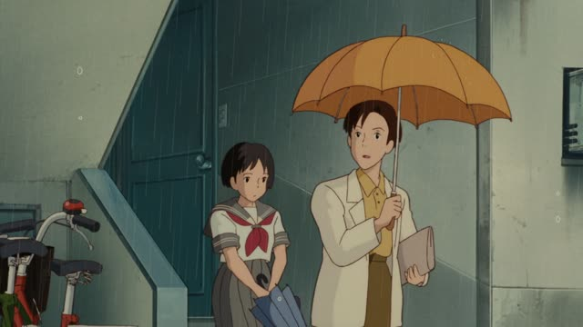
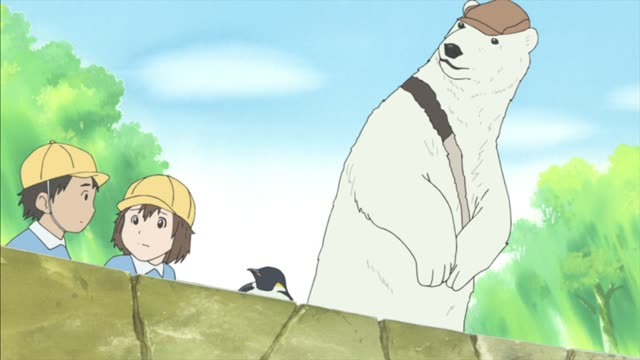
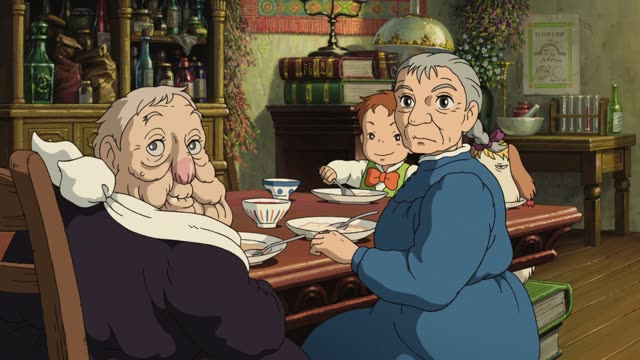
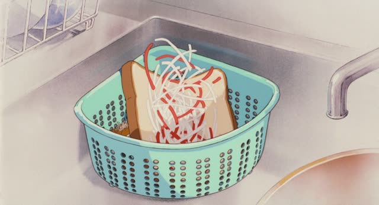

ばかり
Goblin Slayer · Episode 8
さっきから「ああ」ばっかりじゃないですか！
"All you've said for a while now is 'yeah'!"
ばかり after a noun means "nothing but X, only X, all the time". It usually sounds like a complaint: there's too much of it.
It takes the place of を, が or は. ばっかり is the same word, just more casual and spoken. ばかり itself never changes: politeness comes from the end of the sentence.
On this card, she's fed up: every answer he gives is just "yeah".

Whisper of the Heart
新学期なのに、雨ばっかりね。
"It's a new term, and it's nothing but rain."
On this card, it has rained day after day, and she's sick of it.
Quick Examples
A friend asks why you've gained weight.
最近、お菓子ばかり食べています。
"Lately I've been eating nothing but snacks."
PoliteSomeone asks what your dog is like.
うちの犬は寝てばかりいます。
"My dog does nothing but sleep."
With a verb: ～て + ばかり (いる) = "keeps doing nothing but this".
PoliteFirst day at a new school.
このクラス、男子ばっかりじゃん。
"This class is all boys!"
CasualWith and without
お菓子を食べています。
"I'm eating snacks." Just a fact.
お菓子ばかり食べています。
"I eat nothing but snacks." Only snacks, and it's too much.
Examples from Media
Quartet · Episode 10
申し訳ありません、ご迷惑かけてばかりで。
"I'm so sorry, I keep causing you trouble."
～て + ばかり: all I ever do is cause trouble.
Aggretsuko · Season 1, Episode 7
私こそ、至らないことばかりですみません。
"No, I'm the one who's sorry, for all my shortcomings."
Oishinbo · Episode 34
あたしの店は、あたしの他は男の人ばかりです。
"At my restaurant, apart from me it's all men."
No complaint here: ばかり can also just mean "all of them are X".
Kekkon Dekinai Otoko · Episode 12
ドッジボールばっかりだった気がします。
"I feel like [our talks] were nothing but dodgeball."
Not a game of catch: they only ever threw things at each other.

Shirokuma Cafe · Episode 3
あのパンダさん、寝てばっかりでつまんない。
"That panda does nothing but sleep, it's boring."
Death Note · Episode 30
しかし、お前はテレビばかり見てるな。
"Man, all you do is watch TV."

Howl's Moving Castle
わが家族は、ややこしい者ばかりだな。
"Our family is nothing but complicated people."

Only Yesterday
好き嫌いばっかりして。
"You're always so picky about food."
A mother scolding: all you do is pick and choose.
Further Reading
Tae Kim's Guide to Japanese Grammar
Expressing Amounts · Expressing the opposite of 「だけ」 with 「ばかり」